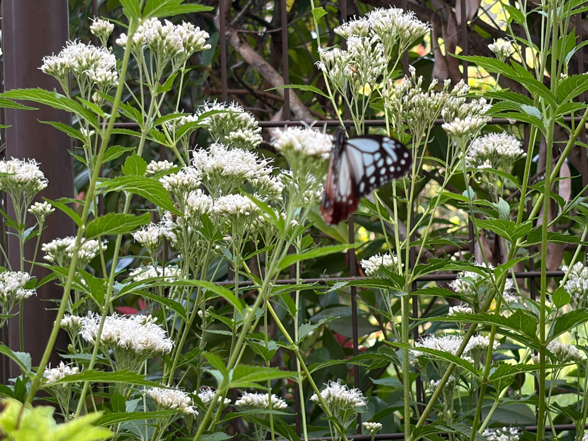
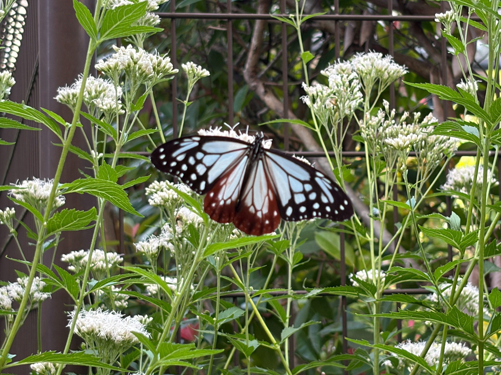
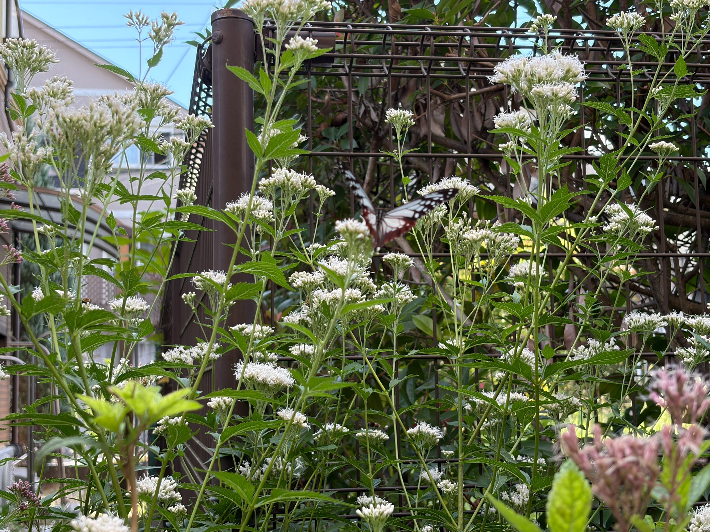
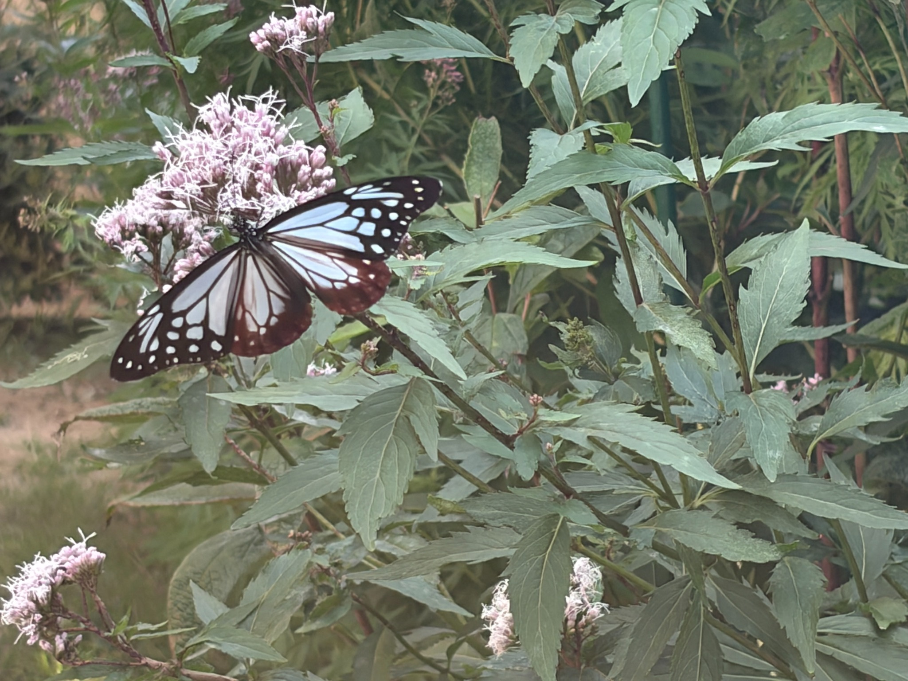
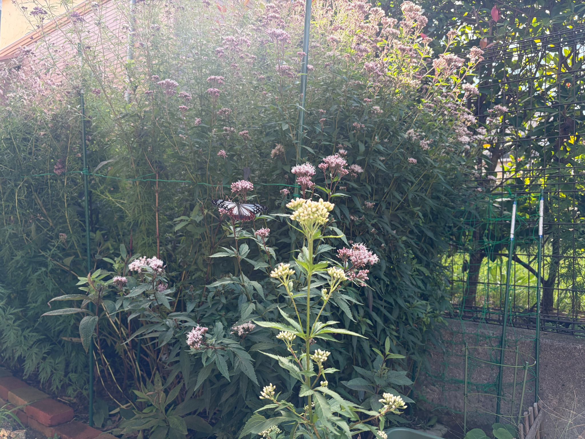
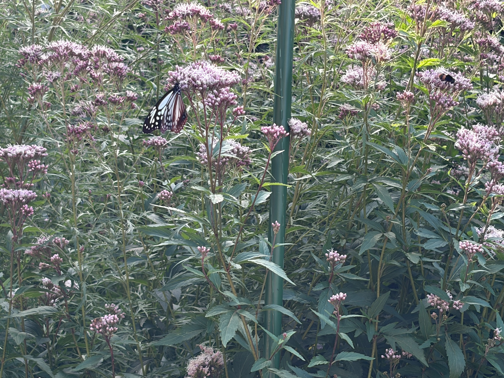
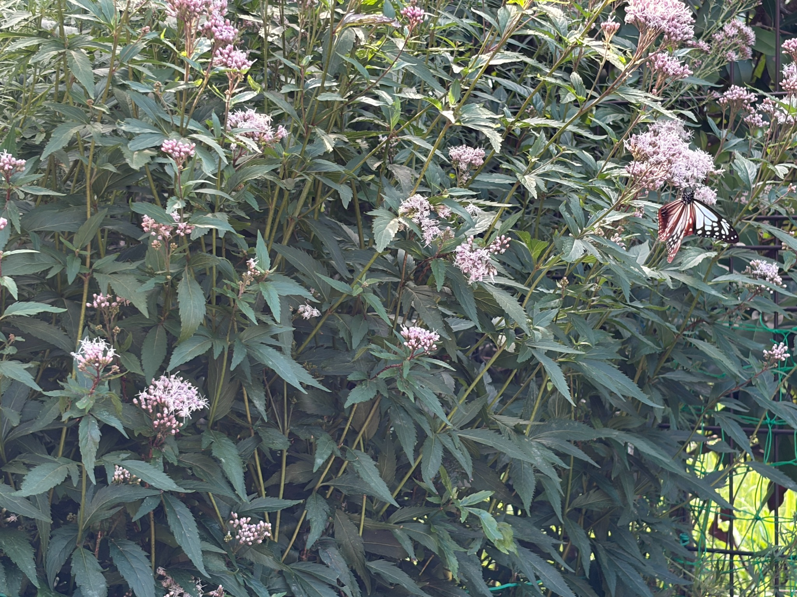
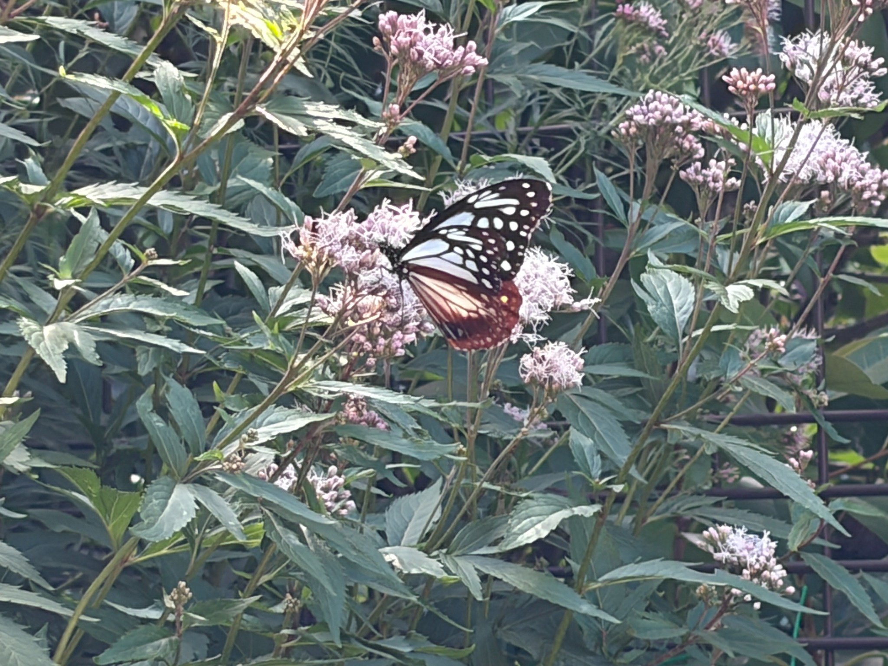
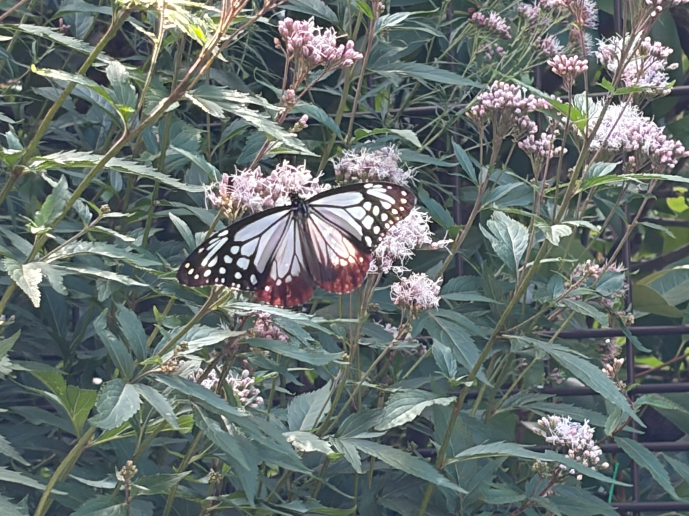

9：30から10：30、庭を訪れたアサギマダラを観察
10月18日は、9：30から10：30にかけて、庭でアサギマダラを観察しました。
10月12日に初めて飛来してから、庭でその姿を見る日が続いています。最初は、待ち続けていたアサギマダラが来てくれたこと自体がうれしかったのですが、毎日眺めているうちに、どの花で蜜を吸うのか、花の咲き具合によって利用する場所が変わるのかにも、目が向くようになりました。
この日も、花房にとまる姿や、翅を大きく広げた姿を写真に残しました。白い花のそばにいる場面と、淡いピンク色の花房にとまっている場面の両方を撮影でき、花と蝶の様子を9枚の写真に記録しています。
なお、9：30から10：30というのは、私が庭で様子を見ていた時間です。アサギマダラが到着した時刻や、庭に滞在していた時間全体を確認できたわけではありません。
初飛来から、目で確認できた数は延べ11匹
10月12日の初飛来から18日までに、私が目で確認したアサギマダラは、延べ11匹になりました。
これは、庭を見ていたときに確認できた数を積み重ねたものです。一日中、庭を見続けていたわけではないので、私が気づかなかった時間にも訪れていたかもしれません。実際の飛来は、これより多かった可能性があります。
また、延べ11匹というのは、11匹すべてが別の個体だったという意味ではありません。同じ個体が日を変えて再び訪れたのか、それぞれ別の個体だったのかは分かりません。
今のところは、個体を見分けて数えた記録ではなく、私が日ごとに目で確認した飛来数の合計として残しておきたいと思います。
初めて来てくれた日の喜びから始まり、その後も庭で姿を見る日が続いていることが、何よりもうれしいです。目を離している間にも来ていたかもしれないと思うと、庭の花が、私の見ていないところでも利用されているのだろうかと想像が広がります。
白フジバカマ原種系は満開。フジバカマ原種系も約9割まで開花
この日の花の咲き具合を、私が見た目安で整理すると、次のような状態でした。
- 白フジバカマ原種系：開花100％、満開状態
- フジバカマ原種系：開花約90％
- 羽衣：開花約60％
白フジバカマ原種系は、引き続き満開の状態です。フジバカマ原種系は約9割まで開花が進み、こちらも満開に近づいてきました。羽衣は約6割で、まだこれから開く花が残っています。
前日の17日は、フジバカマ原種系が約8割、羽衣が約5割という印象でした。それぞれ、この日はもう一段咲き進んだように感じます。
写真でも、糸状の花が広がった花房と、丸い蕾がまとまって残る花房が見られます。同じ株の中でも、すべての花房が一度に同じ状態になるわけではなく、咲き具合に違いがあることが分かります。
ここに書いた開花率は、花を一つずつ数えて出した数字ではありません。庭で株全体を見た、私なりの目安です。日ごとの変化を振り返るための記録として残しておきたいと思います。



この日も、吸蜜の約9割がフジバカマ原種系
18日も、アサギマダラの吸蜜はフジバカマ原種系が中心でした。
私が観察していた範囲では、吸蜜の約90％がフジバカマ原種系という印象です。前日の17日も約90％だったので、2日続けて、こちらの花をよく利用していました。
白フジバカマ原種系も満開ですが、この日はフジバカマ原種系で蜜を吸う姿が多く見られました。庭に複数の種類を植えていることで、同じ日にどの花が利用されているのかを、見比べられるようになっています。
ただし、約90％という数字は、花ごとの吸蜜時間を計測して求めたものではありません。私が見ていた間の、おおよその偏りを表したものです。
写真の枚数から割合を出したわけでもありません。写真には残せなかった時間も含めて、庭を眺めていたときに感じた傾向として記録しています。

12日から18日までで、吸蜜の中心が変わってきました
初飛来の12日を振り返ると、あの日は白フジバカマ原種系への吸蜜が9割以上という印象でした。
16日には、白フジバカマ原種系とフジバカマ原種系の両方を行き来していました。そして17日と18日は、フジバカマ原種系への吸蜜が約9割になっています。
観察してきた流れを並べると、次のようになります。
| 観察日 | 花の状態・吸蜜の様子 |
|---|---|
| 10月12日 | 満開の白フジバカマ原種系が吸蜜の中心。9割以上という印象でした。 |
| 10月16日 | 白フジバカマ原種系は満開、フジバカマ原種系は約6割開花。両方を行き来していました。 |
| 10月17日 | フジバカマ原種系は約8割開花。こちらへの吸蜜が約9割でした。 |
| 10月18日 | フジバカマ原種系は約9割開花。引き続き、こちらへの吸蜜が約9割でした。 |
こうして振り返ると、フジバカマ原種系の開花が進む中で、吸蜜の中心も変わってきたように見えます。
12日の様子だけを見ていたら、「白フジバカマ原種系の方が好きなのだろうか」と考えたかもしれません。しかし、その後はフジバカマ原種系をよく利用しています。日を追って見ていくことで、一日の観察だけでは分からなかった変化が見えてきました。
ただ、毎日同じ個体を観察しているとは限りませんし、観察時間や、そのときの周囲の様子もそろっていません。花の種類だけで好みを決めつけず、咲き具合と、その日に見られた行動を一緒に残していきたいと思います。
満開になる少し前が、よい時期なのだろうか
ここまで見てきて、私なりに感じていることがあります。
満開になる少し前の状態が、アサギマダラをいちばん呼び寄せやすいのではないか。
まだ私のイメージですが、花が次々に開き、咲いている花とこれから開く蕾が混じっている頃に、よく利用されているような気がします。
17日は約8割、18日は約9割まで開花したフジバカマ原種系に、吸蜜の約9割が集中しました。満開の白フジバカマ原種系もある中で、満開手前のフジバカマ原種系が2日続けてよく利用されていたことが、特に印象に残っています。
12日には満開の白フジバカマ原種系で多く吸蜜していましたが、その後も見続けるうちに、今は「満開になる少し前の状態がよいのではないか」と感じるようになりました。
花を育てている側としては、蕾が開いていく時期と、アサギマダラがその花をよく利用する時期が重なると、「今がちょうどよい頃なのかな」と感じます。
一方で、今回確認できたのは、庭を訪れたアサギマダラが、どの花で多く蜜を吸っていたかということです。その花の状態が庭への飛来そのものを呼び寄せたのかまでは、まだ分かりません。
また、開花率だけで蜜の量が分かるわけでもありません。満開の白フジバカマ原種系より、約9割開花したフジバカマ原種系がよく利用された理由についても、今回の観察だけで答えを出すことはできないと思います。
それでも、「満開になる少し前がよいのではないか」という印象は、これから見続けるうえで大切にしたい気づきです。フジバカマ原種系が満開になった後や、羽衣がさらに咲き進んだときに、吸蜜する場所がどう変わるのかを見ていきたいと思います。
花壇全体と、翅を広げた姿を9枚の写真に
今回は、蝶を近くから撮った写真だけでなく、周囲の花や庭の広がりが分かる写真も残しました。
白い花が広がる場所では、花房のそばにいる姿や、翅を大きく広げた場面を撮影できました。蝶に少しピントが合いきらなかった写真もありますが、そのときの花の咲き具合や、庭の中にいる様子が残っています。
淡いピンク色の花房にとまる写真では、翅を広げた姿と、閉じ気味にした姿の両方が見られます。近くから撮ると浅葱色の模様や濃い翅脈がよく分かり、光を受けた翅が透ける様子もきれいです。
少し離れて撮った写真からは、蝶が利用している花房だけでなく、その周りに開いた花や蕾がどのくらいあるのかも見返せます。蝶の姿と花の状態を一緒に残すことで、後から日ごとの違いを考える手掛かりにもなりそうです。
鮮明に写った写真の範囲では、目立つ大きな翅の欠けは見当たりませんでした。ただ、それだけで以前来ていた個体と同じかどうかや、年齢までは判断せず、その日に見られた姿として残しておきます。





ミツバチやアブ、小さなハナムグリも約50匹
この日も、花の周りにはたくさんの昆虫が集まっていました。
ミツバチ、アブ、小さなハナムグリが、合わせて50匹くらい。花で蜜を吸ったり、花の間を飛び回ったりしていました。
アサギマダラを楽しみに育ててきた花ですが、実際に咲くと、さまざまな昆虫が訪れる場所になっています。蝶の姿を追いながら、その周りでも小さな虫たちが動いているのを見ると、庭全体がにぎわっているように感じます。
写真にも、アサギマダラとは別の花房に、ほかの昆虫がとまっている場面が写っています。一つの花壇が、いろいろな昆虫の吸蜜場所として使われていることを、目の前で感じられる光景でした。
こうした昆虫の多さが、アサギマダラの吸蜜する場所に関係するのかも気になります。ただ、18日の記録では、ほかの昆虫が原因で移動したかどうかまでは分かりません。
今後も、虫の数だけでなく、近くに来たときのアサギマダラの反応など、実際に見られたことを少しずつ残していきたいと思います。
花の咲き進み方と、吸蜜する場所をこれからも見ていきたい
10月18日は、フジバカマ原種系の開花が約9割まで進み、アサギマダラの吸蜜も、前日に続いて約9割がこちらに集中していました。
白フジバカマ原種系は満開、羽衣は約6割の開花です。同じ庭の中でも咲き具合が異なるので、それぞれの花が、いつ、どのように利用されるのかを見ていく楽しみがあります。
初めて飛来した12日には、白フジバカマ原種系で長く吸蜜していた姿が印象に残りました。その後、両方の花を行き来する日があり、今はフジバカマ原種系がよく利用されています。
12日から18日までに、私が目で確認した数は延べ11匹。見ていなかった時間にも訪れていた可能性があるので、実際にはもっと多かったのかもしれません。
花は毎日少しずつ変化しています。アサギマダラの姿とともに、その日の咲き具合を残しておくことで、庭で起きている変化を振り返れるようになってきました。
満開になる少し前が、特によい時期なのだろうか。 今回感じたことも、すぐに結論にはせず、これからの観察と比べていきたいと思います。
育ててきた花にアサギマダラが訪れ、その周りをたくさんの昆虫が飛び回る。そんな秋の庭を眺めながら、花を育てる楽しみと、観察を続ける楽しみを感じた一日でした。